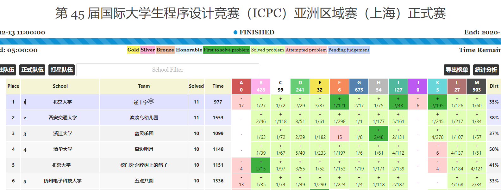

国内基本上没有更高的 ICPC 成就可以拿了！？
队友太牛逼了！
我已经成为精神退役选手了。
生涯（几乎）结束
向之所欣，俯仰之间，已为陈迹，犹不能不以之兴怀。
第一次正式赛最后两分钟绝杀，第一次战胜赛前难以想象的强敌，第一次拿到区域赛冠军，第一次拿到 World Finals 门票…
ICPC 带给我的最大收获，正如伟大哲学家 nocriz 所说，就是让我认识到世界上很多“牛逼”的事情实际上还是可以做得到的吧。入坑之前的我认为 CF 红名、区域赛冠军、进 WF 都是不可能做到的，但是在队友的强力 carry 下，仍然是做到了。我们所认识的半数以上的牛逼人很可能也只是比我们提前努力了一定时间，他们的成就在我们前进足够的时间之后也是可以企及的。
再有就是，ICPC 教会了我什么是 trivial，什么是有意义。没错，这么显然的问题我直到大一才明白！预科的我，一方面由于没有好的指导，执着于机械地刷同济高数、线代；另一方面还受限于内卷思维，不知道自己将来应该学啥。我当时天天卷期末、卷文化课、卷物理竞赛，做一些 trivial 的事，却不知道大脑升级才是求学期间最重要的，没有抓住真正的升级机会。好在当时刚从初中升上来，足够勤奋，虽然效率低但是硬是用自律和学习时间达到了一定升级效果。现在知乎上无意刷到过什么如何获得高绩点、如何获得四六级高分这种问题，看到各种答主仿佛就看到了预科时的我：卷王、“考试带师”们在群魔乱舞，为自己在简单、trivial 考试上整个学期 996 而自我感动，仿佛自己做了什么了不起的事情一样（然后看起来他们考得还不如我这个混子高）。好在预科二时我接触了 ICPC ，终于知道了什么叫做“困难”、“有意义”、“实力至上”。终于，我开始以“大脑升级”为大学的第一准则，明辨“简单”和“困难”的区别，树立高标准，抵制虚假努力 。
下学期可能为了奖金还会打下 CCPC Final 和 EC Final，但是也不会再训练了。World Finals 还有一定吸引力，但是如果推迟到 22 年 3 月的话，实在是太遥远了！1 年之后，谁知道我会在干什么呢？
队友们对于退役，还是挺感伤的，后悔没成为高水平选手就结束了。队友 OI 历程有着难以弥补的遗憾，被少年班政策卡着去不了 NOI，进而无法逃离智慧大学，无法去更好的大学。但对我个人而言，由于之前不懂简单和困难的区别，初中没学过 OI，以及少年班预科一直在学大学简单数学课，我刚刚入坑 OI 就退役了，根本没看到过去往更好大学的希望，也就没有体会过那种痛苦了。我当时也是一种可悲啊！但是，这样的好处就是我几乎只遇到过正反馈，来的轻松，走的也轻松。我知道我再努力训练一年 ICPC 的上限也就是 nocriz 当前的水平，而同时我也发现了可能比 ICPC 更升级的东西，管窥了国外名校学生的学习是什么样的。如果把一年时间放在更升级的学习、科研上面，我获得更好 PhD offer 的概率会大大增加，于是个人也就觉得 ICPC 就是这么回事了，不值得再继续投入时间了。
ICPC 心愿单上 99% 的成就都已经达到了，我也可以光荣退役了吧（逃）
赛季成就
2020.10.18 CCPC Qinhuangdao Runner up
2020.10.25 CCPC Weihai 4th Place
2020.11.22 ICPC Xiaomi Invitational Contest 14th Place
2020.12.13 ICPC Shanghai Regional Contest Winner (To advance to World Finals 2021)
2020.12.20 ICPC Nanjing Regional Contest 20th Place
